![Nine-panel comic. 1: a boy named Anand is called first in a roll call, next to Ajit and baby Aadi. 2: an older Anand at a laptop sees a bar chart where A-names score highest and M-names lowest. 3: a name treemap split into urban higher-income and rural lower-income names, under a magnifier labelled class, community, opportunity. 4: a recruiter compares résumés for Deepti Shah and Manikandan, beside a ballot with many Chandulal Sahus, captioned correlation is not causation. 5: popular baby names snowball downhill beside a log-log plot. 6: mark histograms with a spike at the pass mark of 35 and another at 100, plus five identical candidates. 7: a June-born small child and an August–September-born taller child at a school whose year starts in July, with a widening score gap and hockey players. 8: gender, region and round-number official birthdays tilting a baby's cradle. 9: a bar chart led by parents' education and occupation, children crawling from starting blocks labelled educated parents, stable jobs, good schools and poor resources.](comic-page.avif)
Two children, one exam
Two children sit the same Tamil Nadu Class XII board exam in March 2011. Same syllabus, same paper, same 1,200 marks on offer. They were born a few months apart. One was born in June, the other in September.
Twenty lakh (two million) students took this exam over three years. Anand's team averaged their marks by month of birth.
On average, which child scored higher?
September-born students averaged about 840 out of 1,200. June-born students averaged about 720. The gap is 120 marks, or ten percentage points. On stage, Anand said the only bigger gap he had seen was between SC/ST students and everyone else 14:17.
Source: slide 22 and Anand's 2011 post “Birthday matters”. Both are averages for a whole birth month. Neither is a measured effect of any one child's birthday. Hold on to that June child. The story comes back for them.
Horoscopes can't explain a ten-point gap. But a 2017 audience in Whitefield could think of plenty of other things that might. This story follows Anand's clues in order: a name, a pass mark, a birthday and a parent. At each step it asks one question. Is this number about the child, or about where the child started?
Said marks Anand's words from the recording. Tap any 00:07 to play that moment in the video, which stays in the panel alongside. marks numbers printed in his 2017 deck. Later marks research or reflection from after the talk. Schematic marks diagrams drawn to explain an idea; they are not data. The red-pen boxes are this page's own fact-check.
Called first
The talk opens with a grievance. In a classroom that goes alphabetically, an Anand gets called first: for homework, for presentations, for everything.
“I was born with the name Anand, which is terrible, actually.”
Anand · 00:07
At IIM Bangalore only one classmate came before him, Ajit. Ajit then named his son Aadi, with two A's. “How sadistic can you get?” 00:41 The consolation came later. Being called on early, people told him, meant he'd always be better prepared 00:46. On his slide he calls it a lesson learned: “But I learned to be prepared – always.”

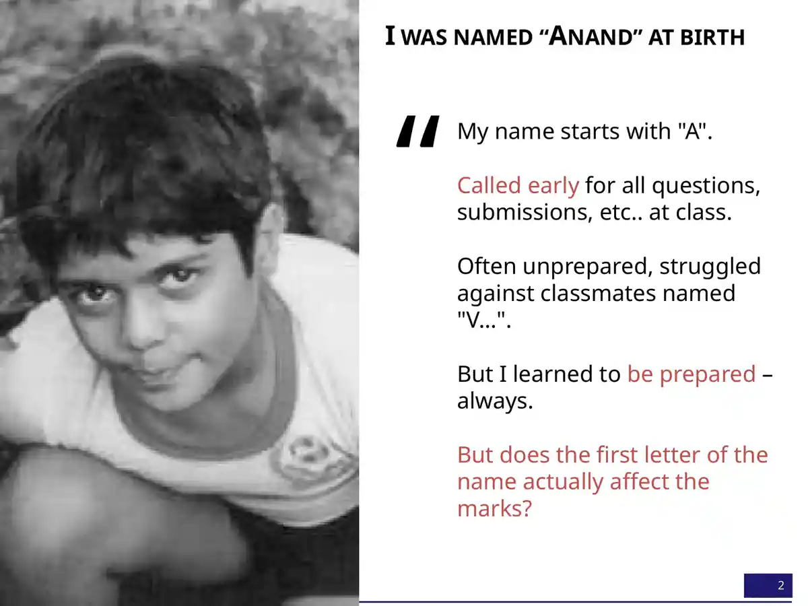
It's a lovely story. It has a mechanism, a hero and a moral, which is exactly why a data scientist should be suspicious of it. So he tested it.
A for Anand
He took Karnataka's state board exam results: eight to eight and a half lakh students a year. Then he averaged their marks by the first letter of their names.
“I found that students whose name begins with the letter A actually are scoring the highest. It’s not a huge difference, but I mean, there is a difference.”
Anand · 01:09
Average marks by first letter, Karnataka
Pick a letter to follow it from 2005 to 2011. The slide shows only these eleven letters.
A was first in 2005 and second in 2011. M was last both times.
Six years later, the order had barely moved 01:25. A slipped to second behind V. M stayed at the bottom. A pattern that steady is unlikely to be luck. But how big is it?
The top and bottom letters differ by about 5 percentage points (4.8 in both years). Karnataka's spread of individual marks isn't on the slides. Tamil Nadu's is, for its 2011 Class X English paper, a different board and exam. There, the middle half of students scored anywhere from 45 to 74. That range is six times wider than the gap between A and M. An average can be very reliable and still tell you almost nothing about the next child on the list.
“So why? Why does this make a difference? Is it really just because I get called on first? I wasn't so sure. I’m still not sure.”
Anand · 01:40
The name was a postcode
Next he tried whole names. Every box below is one of the 5,000 most common names among Tamil Nadu's Class XII board candidates. Bigger boxes are commoner names; darker blue means higher average marks. Tamil names don't split neatly into first and last names (“what is first name, what is last name? I didn't know until I was 22” 02:08). So any part of a name counts. That's why the biggest boxes are Kumar and Priya.
Who does well, by name?

Tap a button to circle the names Anand called out. Each box holds hundreds or thousands of children. Its colour is just their average.
Live version: gramener.com/names. Neither the slide nor the page names the exam year. On stage Anand said “2012, I think” 01:54.
The labels are hard to miss. “The Jains, the Shahs, and the Agarwals in Tamil Nadu—just crack it,” averaging 88% against a state average of 66% 02:26. Shweta, Sneha, Pooja, Harini, Sanjana, Deepti and Varshini also did well: “classic urban girls' names.” Manikandan, Venkatesan, Ezhumalai, Silambarasan, Pandian, Kumaresan and Tirupati did not: “classic rural boys' names” 02:52.
This is the first reversal. Anand saw it at once:
“It's not that the name makes a difference to the marks; it is that the same socio-economic factors that drive a certain nomenclature are also possibly responsible for the children's performance.”
Anand · 03:08
The name was a postcode. It carried a community, a town or village, a family's income, and often its gender. The first letter of “Anand” was probably carrying a little of the same freight. That would explain why A and M kept their places for six years while the theory about roll calls stayed unproven.
Two résumés
Then, three minutes into a talk that began with a joke, Anand said the uncomfortable part out loud.
“Yes, this is correlation, this is not causation. But if I had two resumes—one from a Deepti Shah and one from a Manikandan—and both of them had taken the class 10 exams in roughly the same year, and I don't know their marks, I know exactly whom I’m going to pick because if I’m going to use marks as a basis, there’s a 40 percentage point difference on average between these two names. Names do matter.”
Anand · 03:23
Two applicants. You know only their names. Who gets the interview?
- The 40 points belong to groups, not people. They separate the averages of two very large groups whose members are spread across almost the whole range of marks. The figure was spoken on stage; it isn't printed on any slide.
- The name stands in for history. Choosing by it turns a family's income, community and village into a verdict on someone who never chose any of them, and hands the advantage to people who already had it.
- You'd never actually be this blind. A real applicant has marks, work and an interview. Next to any of those, a name adds only bias.
- It has been measured. In Bertrand and Mullainathan's 2004 experiment, identical CVs got fewer callbacks when they carried names read as Black. Indian studies using caste- and religion-marked names have reported the same pattern. Screening by name is how inequality copies itself, and many employers' rules treat it as discrimination.
Read the résumé line as the talk's darkest joke: a data scientist showing how easily a true average becomes an unfair rule. The talk's later evidence argues against using it. If names, birthdays and parents' jobs can all predict marks, then marks partly measure the start a child got, so a name measures it twice.
Suspiciously steady
While counting names, Anand noticed something odd about the counts themselves.

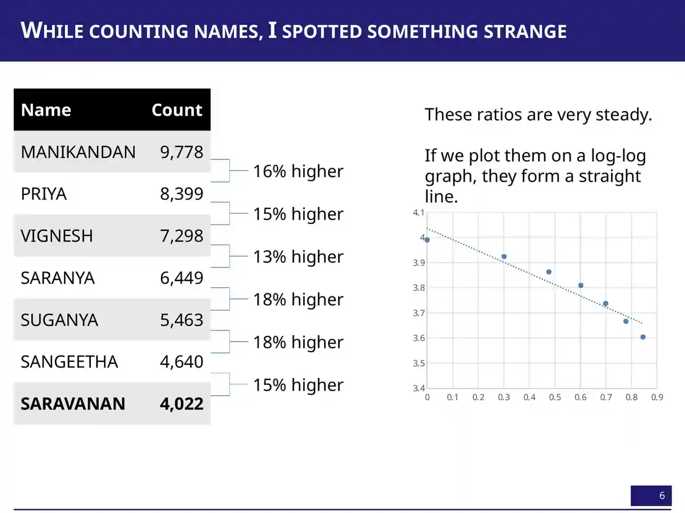

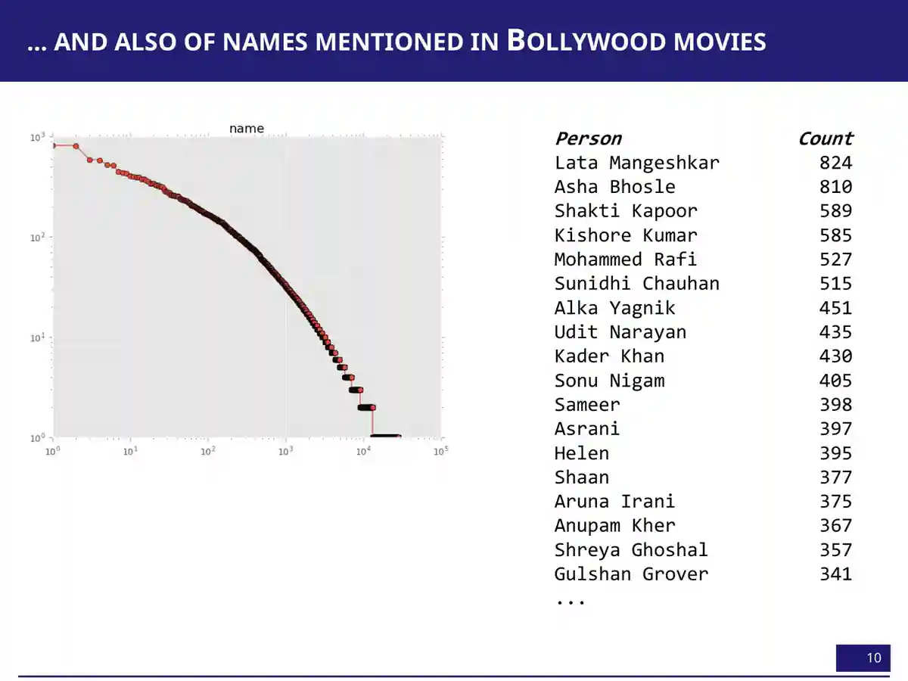
On a log-log plot, rank against count falls on “something very close to a straight line” 04:13. It's a Zipf-like pattern, and it showed up again in candidate names across India's assembly elections. There were 478 Om Prakashes and 411 Ashok Kumars, plus 629 “None of the Above”, which Anand waved away as a data artefact 04:30.
His explanation was preferential attachment, the idea that “popularity feeds on itself” 07:58. Once Shah Rukh Khan named his son Aryan, more parents chose Aryan. Then came the joke that gives the talk its theme:
“My fate was sealed even before they had decided.”
Anand, on his parents choosing a popular name · 08:28
Preferential attachment is one way to get a straight line on a log-log plot, but random copying, mixtures of groups, and fixed limits on how many names are available can also produce one. The chart shows the shape. It doesn't show which process made it.
The election aside: eleven Chandu Lal Sahus and a 1,033-name ballot
Counting candidate names led to a stranger finding. Duplicate names had been rare, but in 2014 Mahasamund had eleven candidates named Chandu Lal Sahu. Bilaspur had five Lakhan Lal Sahus, and Mathura had two Hema Malinis 05:27. Anand said all of them were sitting MPs, and called it “clearly a strategy by opposition to confuse the voters” 05:47. Then he showed the parties those MPs belonged to: “one party is conspicuous by its absence. I will say no more” 05:58.

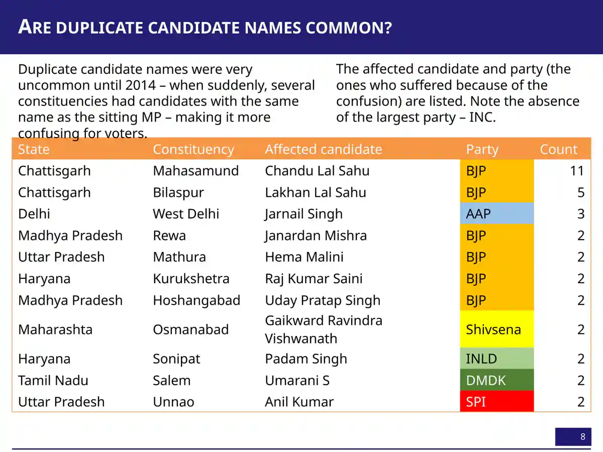
Tamil Nadu shows the extreme. In 1996, Modakurichi had 1,033 candidates: “Not a booklet; it’s a book” 06:59. Many shared a name. “If you are a Palanisamy K., I mean, how do you figure out which Palanisamy K. you are to vote for yourself?” Eighty-eight of them got zero votes 07:19. His 2015 TEDx NMIMS talk tells this election story in full. Here it matters for one reason: data records what people and institutions do, not just who people are. That idea drives the rest of the talk.
Exactly 35
“I’m counting names; I may as well count marks also” 08:38. A test score is supposed to be a measurement: the paper goes in, a number comes out. If that were all, the number of students at each mark should trace a smooth hill. The charts below use the actual numbers embedded in Anand's slides 13–15: about 8.4 lakh Tamil Nadu Class X students in 2011, counted at every mark from 0 to 100. In Tamil Nadu, 35 is the pass mark.
How many students got each mark?
Before you look: tap the mark you think was the most common.
Tap a bar, or use the slider, to see how many students got that mark.
Bar heights are the totals of the two series stored in each slide's chart. The deck doesn't say what separates the two series, so this page doesn't split them. In the slides, Mathematics' 35 bar was cut off at 40,000. Here it is drawn in full.
The smooth hill has a cliff in it. In English, 17,569 students got exactly 35, but only 1,639 got 34. In Social Science, 34,843 got 35, and no one at all got 33 or 34. In Mathematics, 46,492 got 35 and exactly one student got 34. Anand's first guess was charitable:
“Okay, very kind English teachers who say that, ‘I will take some of the students who would have just about failed and move them on.’ … So at least in English, there’s room for prayer in the morning, right? Hope that your paper gets corrected by the right teacher. But you don’t need to pray in Social Science.”
Anand · 09:02
The education department, he said, “swear[s] we have no official policy on moderation” 09:25. Whatever the mechanism, the numbers show an institution at work. The mark isn't only what the student wrote. It's also what the system decided to do with marks that landed near the line.
The histogram shows a pile at 35 and a gap just below it. Which of these does it prove?
Similar pass-mark spikes have been reported in CBSE results. That reporting is journalism, not peer review, and in 2017 the boards agreed to stop “spiking” marks (The Quint; Deccan Herald, Oct 2017) Later.
The ceiling at 100
Switch the chart above to Mathematics and look at the right-hand edge. From 88 to 97 the bars are roughly flat, at 8,500–8,800 students a mark. Then 12,533 students got exactly 100. Anand dismissed the obvious explanation, that maths answers are simply right or wrong, and offered a bolder one:
“Mathematics is one of those subjects that is bimodal. There are some people that get it, and there are some people that don’t. And what’s happening is that the ones that get it are the equivalent of a class 12 student taking a class 10 exam. They would have comfortably scored 110, 120, and because the exam doesn’t give you more than 100, you’re just getting squeezed in here.”
Anand · 10:07
The second half of that is a sharp observation. When a test has a ceiling, everyone who could have scored above it gets recorded as 100. The pile at the top is a fact about the paper as much as the students. Then he went further: “a reasonably strong portion of this mathematical ability is actually determined at birth” 10:31. The slide that followed read “Mathematical ability is innate.”
A pile-up at the maximum mark is what a top-coded test produces. It fits an easy paper, a coached syllabus, lenient marking, or able students, and it can't tell those apart. Nothing in these histograms measures genes, birth or any trait fixed early in life. The bars aren't visibly bimodal either: apart from the 35 cliff and the 100 pile, there is one broad hump. Anand cited unnamed “literature” on stage; this page has not checked it. Treat “determined at birth” as the talk's rhetorical bridge into its next act, not as a finding.

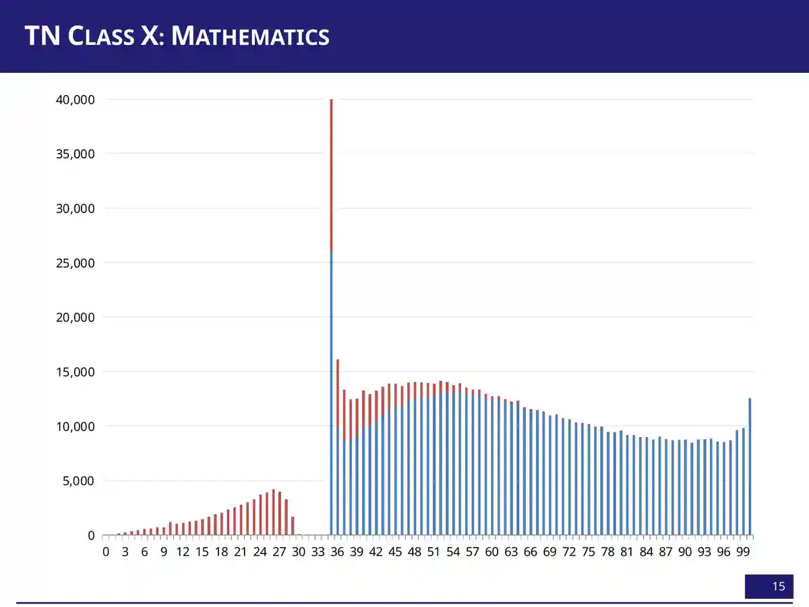
Lines you don't choose
“Not only was I stuck with a name,” Anand said, “I was also potentially stuck with an ability” 10:41. Then he moved fast through two more things a child doesn't choose. He asked the audience whether boys or girls score more. “Two hands. Brave hands that went up. Two boys' hands” 11:03. Nearly everyone else bet on girls, and they were right. The gap was small in Physics and Chemistry and large in Accounting, Commerce and Economics.

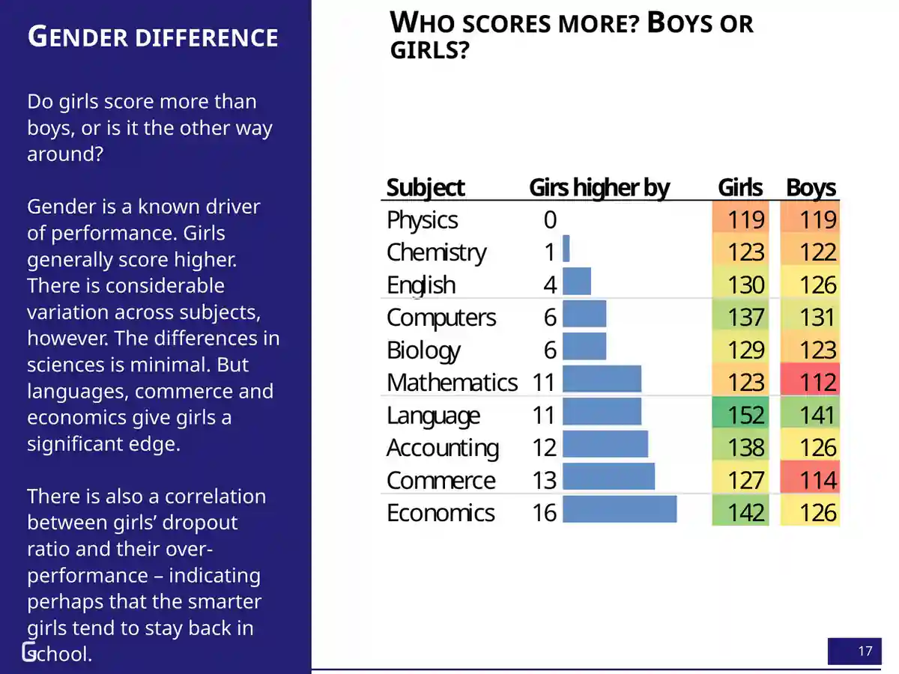

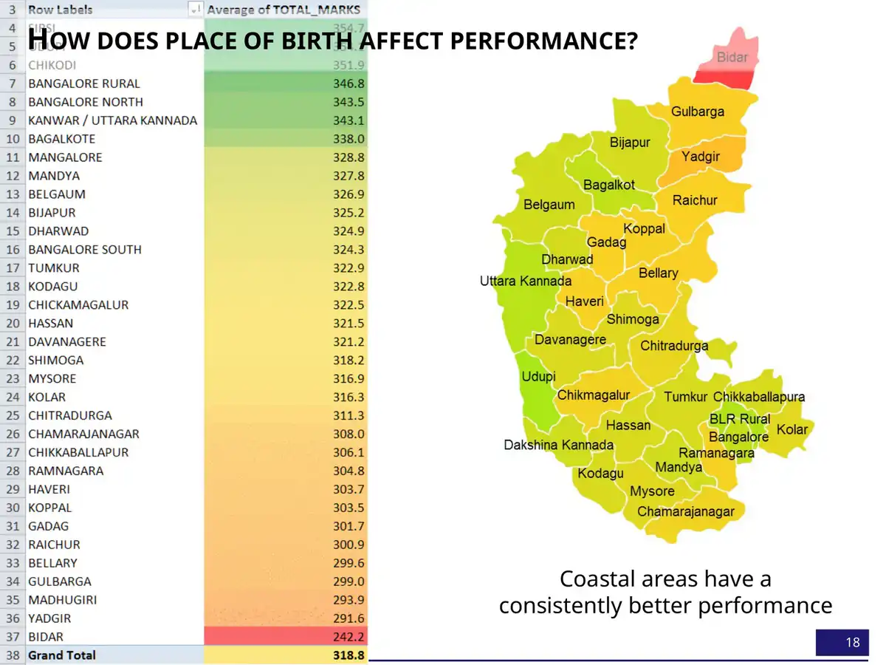
Both times, Anand reached past biology for an explanation. The coast does better “for the same reason that we saw that the name makes a difference. The coastal areas are better off economically and have been so for a very long time” 12:05. As for girls, their higher dropout rate may mean “the smarter girls are more likely to stay back in class” 11:28.
Both slides compare only students who reached the exam. If more girls than boys leave school early, the girls who remain are a more selected group, so their higher average may say more about who stayed than about girls in general. District averages likewise mix income, language, school quality and who sits the exam. These patterns are real for these exams. They say nothing about what any girl, boy or district can do.
Birthdays aren't random
“Birthdays at least ought to be random, right?” 12:21 The first test used American data, chosen because it had nothing to do with Indian schools. Each square below is one day of the year, shaded by how many US babies were born on it, averaged over 1975–1990.

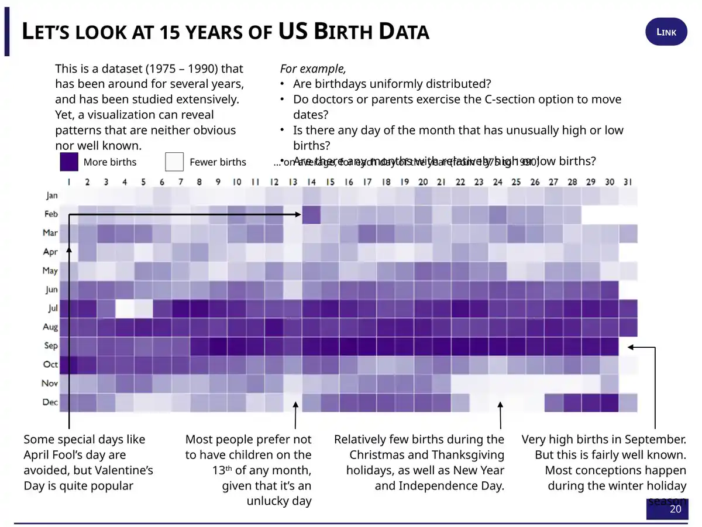
Births pile up in September, nine months after the winter holidays. They thin out on Christmas, Thanksgiving, New Year and the Fourth of July: “This half reads like a holiday calendar, not a birth calendar” 13:00. A scheduled birth, such as a planned caesarean or an induction, can be moved away from a short-staffed holiday. The 13th is pale. April Fool's Day is avoided, and Valentine's Day is popular 13:20.
Studies of US birth certificates find the same holiday effects. Spontaneous births rise slightly on Valentine's Day, and scheduled caesareans rise much more. Both kinds of birth fall on Halloween (Levy, Chung & Slade, 2011). Hospitals schedule, parents choose and calendars have meanings. That fits the heatmap, but the picture alone can't say how much is superstition and how much is staffing.
Then Anand did what the scientifically minded people around him would have mocked. He asked whether sun signs mattered. “I said, ‘What rubbish.’ And I found that if you plot the average marks of students born on different months, June-born score the lowest, September-born score the highest” 14:04.
Which June?
This is where the cold open comes from. Slide 22 plots the average Class XII total, out of 1,200, against the month the student was born.

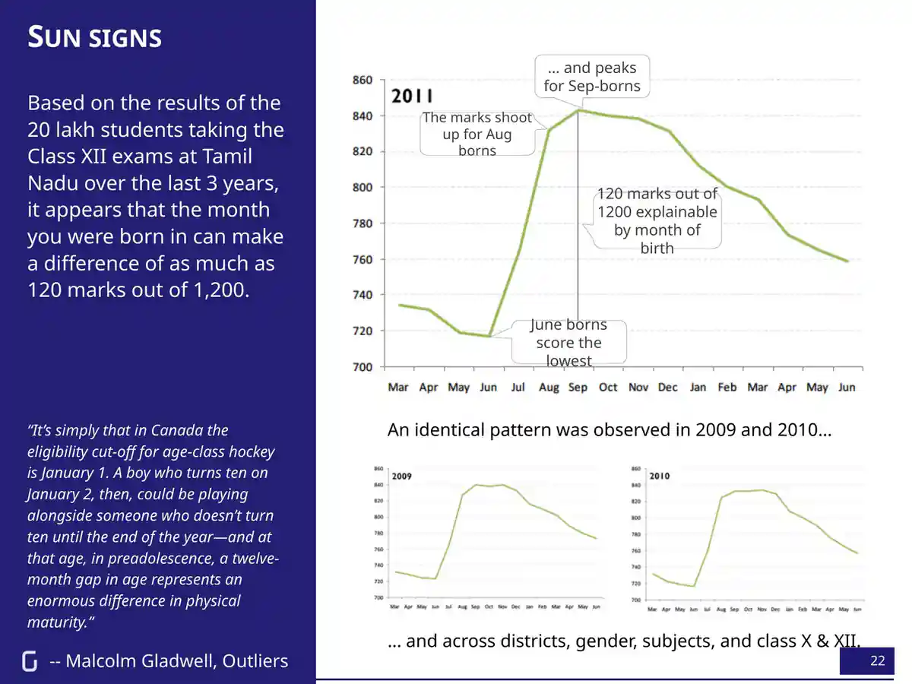
The same shape appears in 2009, 2010 and 2011. On stage, Anand said it held across districts, classes, subjects, and boys and girls 14:30. He knew the explanation, and so did the audience:
“This is the same phenomenon that Malcolm Gladwell talks about in Outliers, where children born in the months of January, February, and March tend to make the Canadian junior hockey team.”
Anand · 14:49
In Gladwell's hockey leagues, the cutoff is 1 January, so a January-born boy plays against boys up to a year younger. In Tamil Nadu, Anand said, “The June-borns just make the cutoff and are the youngest in the batch. The August-September borns just miss the cutoff and end up joining the next year and are typically the oldest in the class” 15:20. This is the relative age effect.
Now look at the x-axis again. It isn't one year. It runs sixteen months, from March 1991 to June 1992. That means there are two Junes on it.
The 720-mark June is June 1991. Those students were three months older than the September stars.
Anand's own 2011 write-up, “Birthday matters”, flags it. Students born before September 1991 were older than the regular class, and “many of these are failed students from the previous year, introducing a bias in the results.” So the left end of the curve is partly a different group: students retaking the exam. The regular cohort runs from the September 1991 peak (about 840) down to June 1992, the true youngest, at roughly 760 by eye. That's a fall of about 80 marks, month by month, oldest to youngest.
So the clean version of the relative-age story is smaller than 120 marks, though still large. And the big jump between June and September is two things at once: the cohort boundary, and a change in who is sitting the exam. The 120 figure on the slide is a real difference between two monthly averages. It is not the effect of being three months older.
Anand said the gap is “only five percentage points in Class 6, and it expands to ten percentage points by the time it's Class 12” 15:37. No slide shows the Class 6 data, so this page can't check it. International studies usually find the opposite: relative-age gaps shrink as children grow. Bedard and Dhuey found the youngest pupils were 4–12 percentiles behind in grade 4 and 2–9 behind in grade 8 (QJE, 2006). A 2021 systematic review of 21 studies across 24 countries confirms that relatively younger pupils score lower and repeat grades more often. A forthcoming Journal of Economic Literature review (Cavallo, Dhuey and others) warns that age at entry, age at testing, time in school and age relative to classmates are usually bundled together and need separate methods to untangle Later. Whether Tamil Nadu's gap really widened, and how much of it was age rather than who stayed in school, would need the raw data.
Where's the line?
The relative-age story needs a cutoff, and the talk is loose about where it was. On stage, “Schools in Tamil Nadu open in July” 15:20. In the 2011 post, schools open mid-June, children must be five to start Class 1, and the rule was “implemented leniently”. This page couldn't find a dated government order giving the cutoff for children born in the early 1990s. So the model below lets you move the line yourself.
Two children, one cutoff. Who ends up oldest in class?
Both children are born in the same calendar year. Each class takes twelve months of birthdays ending at the cutoff, and classes are assumed to start at age five. Real schools bend rules, admit late and hold children back, which is why a cutoff in a model is cleaner than one in a register.
Push the cutoff around and one thing never changes. Whoever is born just after the line is the oldest in their class, and whoever is born just before it is the youngest. Nothing about the children changed. Only their position relative to a date set by an administrator. Tick the “official birthday” box and you get the twist in the next section.
Born on the 15th
Anand then turned the same heatmap on India. The dates came from school admission records for about a crore (ten million) children.
“Turns out that none of the Indian parents have children in August. Not quite, not quite. Of course, children are born in August. But remember that we have as Indians a very different option: we can choose what the birthday is going to be as far as admissions are concerned, can’t we?”
Anand · 16:00

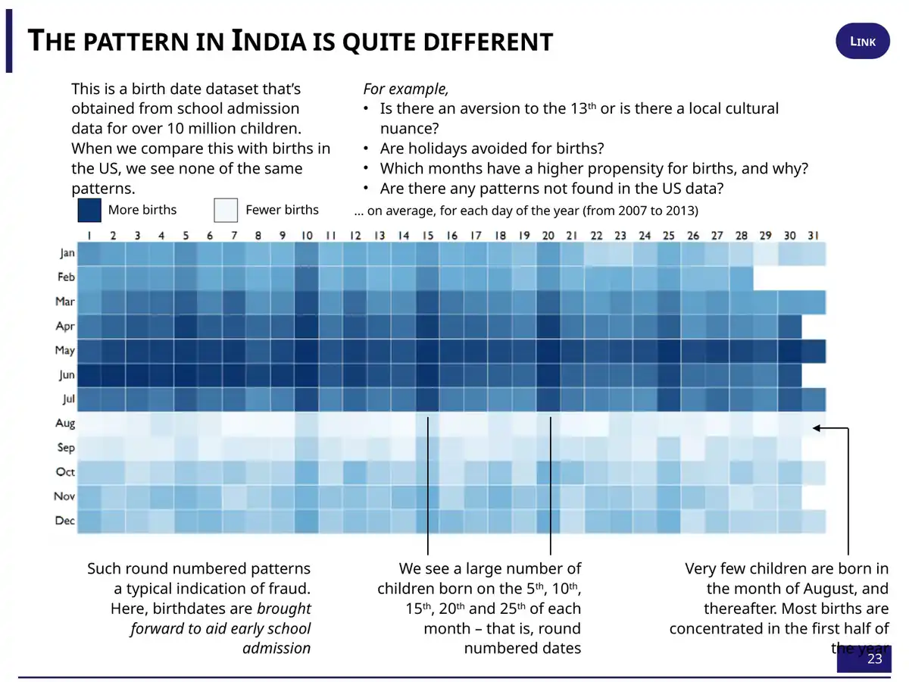
![Slide 24: the same calendar grid shaded green for higher marks and red for lower marks, 2007 to 2013. The June row is the reddest, and June 1 is deep red. The 1st, 10th, 15th and 20th columns are orange in most months. August to December rows are mostly green. Impossible dates such as 30 and 31 February, 31 April, 31 June, 31 September and 31 November are bright red. A caption reads: Children born on round numbered days score lower marks on average, due to a higher proportion of younger children.](slides/slide-24.webp)
Real births don't stop in August. The records do, because a date written just before the cutoff gets a child into school a year earlier. And the dates people write when they're choosing tend to be round: “When people cook up numbers, they cook up round numbers” 16:28. Then the evidence turns personal:
“My father’s actual birthday is December the 21st; his official birthday: June the 15th. Get into school earlier.”
Anand · 16:35
Slide 24 closes the loop. Children recorded as born on the 5th, 10th, 15th and 20th “tend to score lower because these are younger kids who’ve been squeezed back into an earlier date” 16:45. A family's reasonable choice, made years earlier, puts a child into a class where they are younger than every classmate whose date is real. That's the box you ticked above.
Slide 23 calls round-number clustering “a typical indication of fraud.” That's too strong for any one child. In the 1990s and earlier, many children had no birth certificate, and a parent, headmaster or clerk filled in a plausible date. In Gujarat, 29 MLAs were officially born on 1 June (Times of India, 2004). Demographers call this habit of rounding heaping. A cluster on the 15th says the dates were chosen. It doesn't say who chose, or why, or whether any particular date is false. In 2026, Anand corrected his own later shorthand that most Indian children are born on 1 June: the anomaly is in recorded dates, not births Later.
Notice what the June child has become. In the cold open, June looked like bad luck in the stars. By now it might mean the youngest in the class, a student retaking the exam, or a December child with a June certificate. These are three different children who end up in the same row of a spreadsheet. A month-of-birth average can't tell them apart.
Who you're born to
The last clue came from a different dataset. NCERT's National Achievement Survey tested about 1.9 lakh Class VIII students and asked about their homes: parents' schooling and jobs, books, chores, games, computers. (The survey's third cycle was fielded in 2012 and published in 2014, which is the date on the slide.) Gramener ranked every factor by how much it moved scores.
“And we find that the top four factors that make a difference: father’s education, father’s occupation, mother’s education, mother’s occupation.”
Anand · 17:10

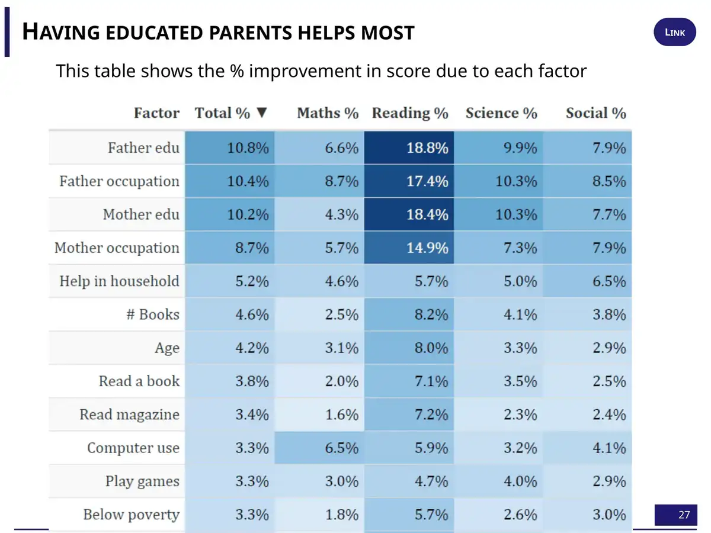
The pattern shifted by state. In Punjab, which Anand called “far more patriarchal,” the mother's background mattered more, and in West Bengal the father's did. “But there’s no place where one of these four parameters is not the number one factor” 17:20. He added a joke about play improving maths and TV improving English, then dismissed it:
“But all of these are secondary to the two primary factors, which are who your parents are and what they’re doing.”
Anand · 17:54
The slide's heading says “% improvement in score due to each factor.” A survey can rank how strongly each factor goes with scores. It can't show what any one factor causes. Educated parents bring income, a quieter home, better schools, tuition and English at home all at once. The slide's magnitudes don't show direction either, and TV isn't on it, so the play-versus-TV line can't be checked here. What the table does support is Anand's main point: the factors that track a child's score most closely are ones the child had no say in.
Prisoners?
Then came the line the talk was named for. Anand gathered every clue into one sentence:
“Which means that in our own small ways, we are prisoners of our birth. How we are called by our parents—that makes a difference. What skills we’re good at is something we’re born with. What gender we’re born at makes a difference. Where we’re born, when we’re born, whom we’re born to—all of these are factors that truly influence our lives.”
Anand · 18:02 · He ended: “Let’s be thankful for that. Thank you.” 18:28
It's a strong closing line, and most of it holds up. Name, place, birth date and parents did predict marks, in data covering well over a crore of students. But one item on his list doesn't belong. “What skills we’re good at is something we’re born with” rests on the maths ceiling, and the histogram can't carry that weight. The others share a different explanation. A name carried a postcode. A birthday carried a place in the class register. A pass mark carried a board's moderation. A parent's job carried a household. None of them is a fact about the child. Each is a fact about the start the child was given.
That changes what the word prisoner means. A prisoner of biology has nowhere to go. A prisoner of cutoff dates, moderation rules, admission paperwork and unequal schools is held by things people built. Things people built can be changed.
A mark is a number.
A child's opportunities are a history.
Anand has since described how the talk came together: “I didn't execute any new analysis. I just cherry-picked disparate analyses into a theme. (Took me three days to plan, though.)” (Speaking unprepared, April 2026) Later. That's the right way to hold it: a set of old, real patterns, given a dramatic frame. It isn't a single controlled study. The patterns lead to practical questions, all of which these datasets could start to answer:
- Do we report a child's age in class next to their marks? A June-born child two marks behind a September-born one may be ahead for their age.
- Does the gap between the youngest and oldest in a class shrink between Class 6 and Class 12, or grow? If it grows, the school is adding to it.
- Where does our histogram jump, and who decided that? Publish the whole distribution, not just pass percentages.
- Are we screening anyone by a proxy such as a name, a school, a pin code or a birth month, when we could look at what they actually did?